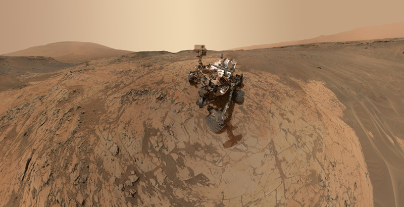
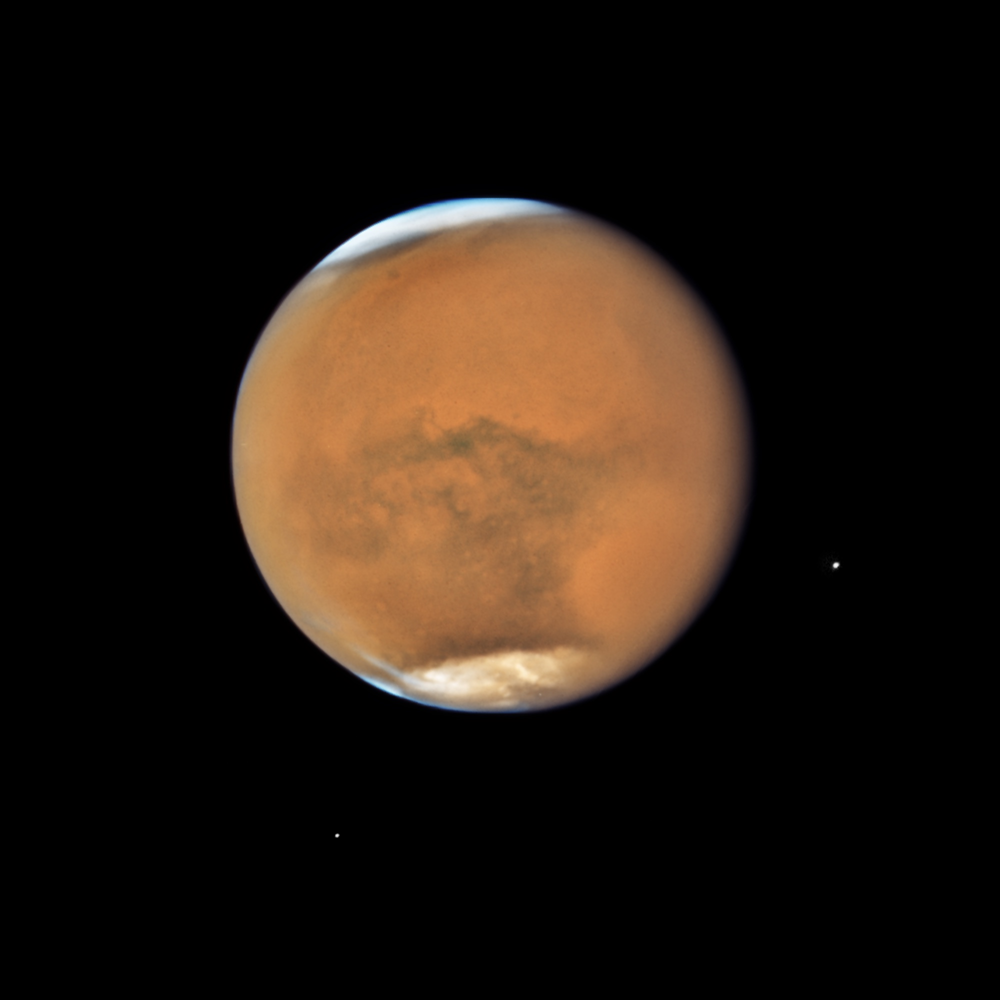

On its way back home to the land of its predecessors, our gardener makes a pit stop on a dusty, barren landscape. The Tardigrade looks up, pondering the crisp feel of Mars' penetrable atmosphere (with less than 1% the density of Earth's), and admires the contrast of rocky mountains against the red-orange horizon. The air is quiet, with no active volcanoes spewing ice or clouds, drizzling methane floods, and smells musty with a hint of iron and… could that be methane?
Compared to the other celestial bodies, this planet felt the most similar to Earth; temperatures were milder, averaging around -80°C, and the geology shared structural characteristics, like canyons and impact craters instead of icy tectonics. The Tardigrade Astronaut traversed the planes, examining sites for ecological expansion, stumbling across a few key locations.
Selfie made by NASA's Curiosity Mars rover, source: NASA/JPL-Caltech/MSSS
The planet's polar caps, located at its north and south poles, consist mainly of water ice and carbon dioxide. Like the rest of Mars, this cool area is abundant with radiation and lacks substantial atmospheric pressure. To the gardener's delight, a possible eukaryotic organism that could withstand extreme temperatures, radiation, desiccation, and vacuums may be a tardigrade.
Hubble's Close-up View of Mars, source: NASA, ESA, and STScI
The gardener also observed gypsum veins, silica deposits, carbonate, and hematite, among other minerals consistent with many hot springs on Earth, suggesting that Mars once had a water habitat capable of maintaining microbial life. Thermophilic chemolithotrophs, heat-loving critters that obtain energy by oxidizing inorganic compounds instead of sugars and fats, may bode well if introduced to these areas due to the surplus of digestible minerals and metals. For instance, Acidithiobacillus ferrooxidans, found in Mount St. Helens and Hawaii's volcano Kilauea, and even in acid drainage environments, oxidize sulfur compounds and ferrous iron, as can Leptospirillum ferriphilum. Perhaps a chemolithotroph capable of surviving burial might have even better odds, as they would have enhanced radiation protection.
A Cosmic Gardner exploring Mars' surface, source: MidJourneyAI